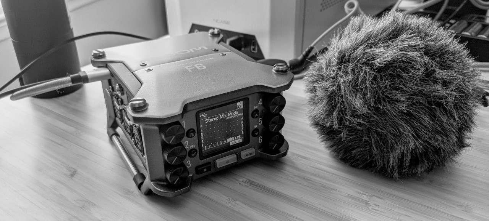
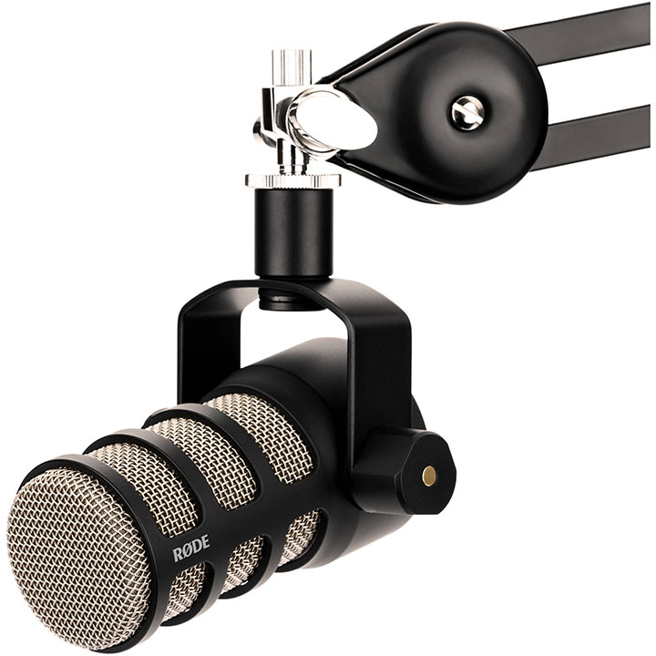
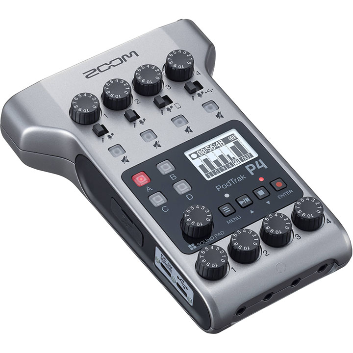
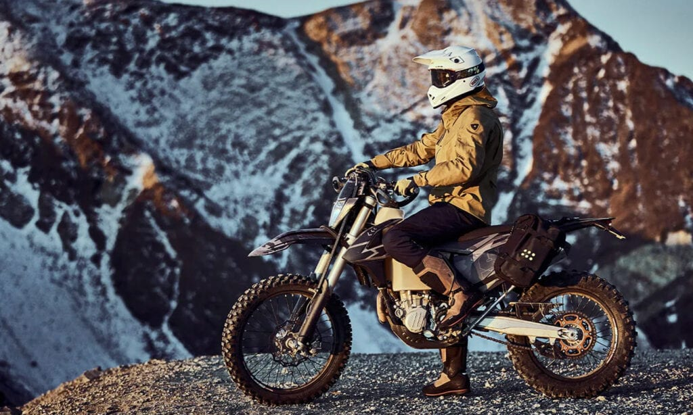

2021년도 지름 결산
여전히 매해 연말 지름보고 입니다.
- 2015년 지름결산
- 2016년 지름결산
- 2017년 지름결산
- 2018년 지름결산
- 2019년 지름결산
-
Zhiyun Crane M2
본격적인 아마추어 유투브가 되기 위해 손떨림 방지용 3축 짐벌을 하나 장만했습니다. 최대 720g까지 지탱할 수 있는 짐벌인데요, 100불 할인하길래 덥썩 집었습니다. 액션캠으로 찍을 때야 rocksteady 기능이 있어서 큰 걱정이 없는 데, 소니 RX100M3로 찍을 땐 손떨림 때문에 고민이었는데, 이 짐벌을 쓰고 나니 참 편합니다.
짐벌을 쓰니 이제 오디오가 거슬리네요. RX100m3에는 오디오 단자가 없어서, 오디오를 따로 녹음해서 합쳐야 할 것 같네요.
몇번 사용해 보았는데, 일단 거추장스럽게 무거운게 제일 걸려서 환불했습니다.
-
Zoom H1n
짐벌 글을 쓰다보니 작년 Stuff에 Zoom H1n을 추가를 하지 않았었네요. 이참에 2021년으로 추가합니다. 오토바이 영상 찍으면서 액션캠은 윈드노이즈 때문에 소리는 아예 못 쓸 지경이라 오토바이 배기음만 녹음하려고 장만한 오디오 레코더입니다. 데드캣 달아서 윈드노이즈 줄이고 오토바이 뒤쪽에 달고 다닙니다. 아니면 자켓 주머니에 넣거나요.
싱크 맞추는 게 일이긴 한 데 박수 한두번 쳐주면 되니 크게 문제될 건 아니고요. 그걸 영상 편집 프로그램에서 맞추는 게 조금 귀찮긴 합니다. 그래도 이것 저것 시도해 본 결과 이 방법이 최선입니다. 바람을 이길 다른 방법은 아직 찾질 못했네요.
-
Rode VideoMicro Shotgun Mic
계속 영상 관련 장비만 사재끼고 있습니다. 오토바이 타지 않을 때 액션캠으로 촬영시 싱크 맞추는 일을 없애기 위해 샷건 마이크 하나 장만했습니다. 지향성 마이크라 주변 잡음이 녹음되지 않는 점이 좋습니다.
-
Cheap Diesel Heater
캠핑을 3계절 가기 위해 장만한 디젤 히터입니다. 기기는 텐트 밖에 놔두고 따뜻하게 데워진 공기만 텐트 안으로 집어넣는 구조로 되어 있어, 일산화탄소 중독은 걱정하지 않아도 되는 방식입니다.
RV나 오버랜드 캠핑에 많이 쓰이는 히터인데, 일단 공기가 건조해서 결로현상이 발생하지 않는게 가장 좋고, 프로판 히터보다 기름 먹는 것도 적어서 좋습니다.
그러나 캠핑장에서는 사용하기가 좀 어렵습니다. 연료펌프소리가 조용한 캠핑장에 울려 퍼지다 보니, 주변에 민폐겠더라구요. 그냥 겨울용 캠핑은 프로판히터를 쓰던지 아니면 겨울은 패스하던지 해야겠습니다.
-
Dometic CFX3 55IM
캠핑을 갈 때 가장 문제가 되는 게, 잠자리보다 음식입니다. 매번 아이스박스에 얼음 가득 채워서 그 위에 먹을 것을 넣고 가는 데, 캠핑 하루 지나면 얼음이 녹아버려서 채소는 흐물흐물, 더운날엔 이틀 겨우 유지하고 그 다음부터는 시원한 물조차 먹을 수 없더라구요. 그래서 얼음이 필요없게 12V로 동작하는 간이 냉장고 하나 장만했습니다. 올해는 캠핑장비 지른 게 많아서 따로 모아서 리뷰 페이지를 만들어야 할 것 같네요.
만듦새는 정말 좋습니다. ARB만큼 멋지진 않지만, 충분히 디자인 좋고 냉장 성능도 좋네요. 블루투스로 스마트폰과 연결되서 스마트폰에서 온도 보고 조절할 수 있는 것도 좋습니다. 구지 뒷 트렁크 문 열어서 조절할 필요가 없죠.
55L 짜리 샀는데, 실제 공간은 50리터가 좀 안될 것 같아보이네요. 캠핑용으로는 큰 문제가 없는데, 마트 장 볼때에도 쓰려고 했는데 몇 품목 안들어 갈 것 같아서 아쉽습니다.
년 초에 사서 캠핑갈때 여행갈때마다 썼는데, 1년가까이 지난 지금, 정말 잘 샀다고 생각하고 있습니다. 항상 신선하게 음식을 유지할 수 있다보니, 장거리 여행갈때 길 가에 멈춰서 간단히 점심먹거나, 시원한 음료수를 꺼내서 마시거나, 우유를 신선하게 보관해 두는 등, 유용하게 사용하고 있습니다. 저도 만족, 아내도 대만족하는 제품입니다.
-
REI Camping Table
튼튼한 제품에 만듦새도 마음에 드는 데, 캠핑의자 (헬리녹스)와 높이가 맞지 않네요. 일단은 요리용 테이블로 사용하고 있습니다. 의자와 곁들이는 테이블은 아무래도 헬리녹스 테이블원 으로 가야겠네요.
-
Helinox Chair One
두말할 필요가 없는, 백팩킹 의자로는 최고의 제품이죠. 작고 가볍고 짱짱합니다. 기존 캠핑용 의자가 부피가 워낙에 커서, 캠핑장비가 늘어나며 그 부피가 부담이 되어 장만했는데, 마음에 듭니다.
-
Marmot Limelight 2P Tent
모터사이클 캠핑용으로 쓰려고 장만했는데, 몇달이 되도록 써보지 못한 비운의 텐트입니다. 일단 폴대가 좀 길어서, 모터사이클 패니어 가방에 들어가지 않고, 텐트 부피가 작은 편이 아닙니다. 좀 더 작은 사이즈를 샀어야 했나, 고민이 되네요.
일반 캠핑에 몇번 가져가서 쓴 바로는, 매우 만족했습니다. 금방 설치 가능하고, Footprint도 같이 들어있어서 추가 지출 없습니다. 텐트가 바람에 잘 버티고, rainfly도 제 역할을 잘 해주는 듯 합니다. (아직 비 맞아본 적이 없네요)
결국, 폴대 길이 때문에 환불하고 LoneRider ADV 텐트를 장만했습니다.
-
Enlightened Equiptment Enigma Custom (Quilt)
머미형 침낭에 비해서 잠잘 때 매우 편하게 잘 수 있다고 해서 장만했네요. 3면만 감싸고 있어서 이것만으로는 제 효과를 보기 힘들고, 슬리핑패드가 어느정도 단열이 되어야 합니다. 단열 잘 되는 빅아그네스 패드 (R4.3)와 함께 써보니 정말 따뜻합니다. 15F짜리인데, 35~40F까지는 반팔만 입고 자도 될 수준이네요.
커스텀이라 6주 걸려 받았는데, 만족합니다.
-
Big Agnes Insulated Sleeping Pad
단순히 R값이 높다는 이유로 NEMO Tensor Insulated를 제치고 고른 제품입니다. 일단 단열은 정말 마음에 듭니다. 더 두꺼운 퀸 에어 매트리스보다 찬 기운이 훨씬 덜 올라옵니다.
단점도 있는데, 같이 딸려온 에어색이 단점이네요. 한번 바람 채우는 데 거의 20번은 넣어줘야 패드를 채우더군요. NEMO Tensor에 딸려오는 에어 색은 적은 횟수로 가능하다던데, 좀 아쉽습니다.
다른 불편한 점은 일반 폭(20인치)으로 주문한 건데, 이건 와이드(25인치)로 교환할 생각입니다. 교환하는 김에 NEMO Tensor Insulated로 갔습니다.
-
DJI Mini 2 Drone
여행 갈 때 영상을 찍으면 항상 좀 밋밋한 감이 있더군요. 카메라를 여러대 동원하는 것도 아니고, 한 각도에서 아이들을 찍거나 풍경을 찍으니 좀 심심한 감이 있어서 드론을 장만했습니다. FAA 등록이 필요 없는 DJI Mini 2를 샀구요. 시험삼아 찍어본 영상을 보니 매번 가던 곳이 맞나 싶을 정도로 다른 모습으로 찍히네요. 만족합니다.
(추가) 아마 올해 제가 가장 만족하지 못한 제품이 아닐까 하네요. 몇번 사용 후, 안드로이드 버전이 업데이트 되고 난 후 계속 크래시가 납니다. 앱은 2020년 7월? 이후로 업데이트가 없고 Play Store에서 내려갔네요.
알아보니, 앱을 홈페이지에서 다운 받아서 sideload로 설치해야 하더라구요. 제 스마트폰은 sideload가 정책적으로 금지되어 있어서, 이 방법이 불가능 합니다. 중고로 장터에 내놓을 생각입니다. 1년의 시간동안 대응이 전혀 없어서 정말 실망이네요.
-
Zoom F6

이전에 썼던 Zoom H1n으로 바이크 배기음 녹음을 해 보니, 약간 불편한 점이 있더라구요. 일단 배기음이 RPM이 높을 때와 낮을 때가 소리 크기가 확연히 다릅니다. 시동 걸어두고 게인을 맞춰두면 나중에 들어보면 피크쳐서 클리핑 나서 못쓰게 되는 경우도 정말 많았고, 그렇다고 줄여두면 너무 많이 줄이는 경우도 있어서, 소리가 작게 녹음 되기도 합니다. 그래도 작게 녹음 되는 건 그나마 괜찮더라구요.
그것외에, 마이크를 가방 안에 보관 하니 가방 펄럭이는 소리도 크게 녹음되는 경우도 있어서 녹음하는 게 쉽지 않더라구요.
그러다 Zoom H1n을 잘못해서 떨어트렸는데, 플라스틱으로 된 외관이라 바로 깨져서 박살이 났네요. 이때다 싶어서 이전에 눈에 봐뒀던 Zoom H5를 구매해 볼까 생각했는데, 그러다 32bit float 녹음기란걸 알게 되어, 생각했던 것 보다 훨씬 고급의 Zoom F6를 구입했습니다.
일단, 32비트 부동소수 녹음이라 인풋 게인 조절할 필요가 없어서 좋습니다. 거기에 Zoom F2와는 다르게, F2는 ADC가 하나인데, F6는 ADC가 듀얼이라 HDR처럼 다이나믹 레인지가 높습니다. 그래서 마이크를 밖으로 빼서 바이크에 잘 고정만 해 두면 더이상 걱정 할 필요가 없습니다.
그것 외에도, 만듦새가 아주 좋아서 고급 느낌이 물씬 납니다. 다른 Zoom 시리즈와 같이 USB 인터페이스로 연결할 수 있어서, 평상시엔 컴퓨터에 연결해서 XLR 마이크로 회의에서 사용중입니다.
(추가) F6는 리턴하고 회의용으로는 Zoom PodTrak P4, 바이크 배기음 녹음으론 Tentacle Sync Track E를 장만했습니다.
-
Rode PodMic

Zoom F6를 사고 나니, 바이크에만 쓰는 건 아쉬워서 Blue Yeti가 있음에도 불구하고, XLR로 마이크 연결해서 쓰기 위해 장만한 마이크입니다.
일단 컨덴서 마이크인 예티와는 다르게 다이나믹 마이크입니다. 그래서 주변 노이즈가 좀 덜 들어옵니다. (아예 안들어 오진 않습니다) 그러나 그것보다는 사실은 이뻐서 샀어요. 예티는 투박한 면이 있는 데, PodMic는 정말 작고 이쁩니다.
-
Zoom PodTrak P4

Zoom F6를 쓰면서 문제가 있어서 F6를 쓰기보다 사용처를 분리해서 두 기기로 바꿨습니다. 그중 USB 오디오 인터페이스 용을 대체하기 위해 장만한 게 Zoom PodTrak P4입니다.
사실 기존 F6의 문제가 오디오 인터페이스였거든요. 오디오 인터페이스로 사용하다보면 가끔씩 헤드셋에 노이즈가 끼는데, 한번 이 현상이 발생하면 껐다 켜지 않으면 고쳐지지 않아서 많이 불편하더라구요. 그래서 일단 오디오 인터페이스를 PodTrak P4로 바꿨습니다.
다른 많고 많은 오디오 인터페이스 중 팟트랙을 선택한 이유는 두가지입니다. 첫째는 프리앰프가 70dB까지 증폭된다는 점이고, 둘째는 3.5mm TRRS로 연결도 가능하다는 점이네요.
스칼렛이나 팟캐스트 프로같은 경우는 50dB정도의 증폭이라 제가 사용하는 RODE PodMic를 쓰려면 다들 cloudlifter를 권장하는 편입니다. 없으면 안되는 건 아닌데 노이즈가 많이 올라온다더군요. 팟트랙은 70dB의 증폭이라 증폭에 여유가 정말 많더군요.
3.5mm TRRS로 연결해서 좋은 점은, 스마트폰과 직결된다는 점이네요. 그래서 전화나 클럽하우스를 바로 사용할 수 있다는 점이네요. 게다가 USB로 컴퓨터와 연결도 되어있으니 컴퓨터의 소리가 바로 전화로 내보내질 수도 있구요.
아무튼, 결론은, "비싼 F6보다 팟트랙이, USB 오디오 인터페이스로는 더 낫다" 입니다. :)
-
Ratta Supernote A5x

보통은 저널도 클레르퐁테인 노트에 쓰고, 회사 업무 관련 생각을 정리할 때에도 회사에서 나눠주는 노트에 기입하곤 했습니다. 그러다 요즘 전자책을 많이 읽다보니 책도 읽고 노트도 기록할 수 있는 전자노트가 가지고 싶더군요.
처음엔 Remarkable 2를 사려고 했는데, 소프트웨어나 클라우드가 개판이라는 말을 들어서, 그 다음 후보군이었던 Supernote A5X를 샀습니다.
10인치 전자잉크에, LAMY 펜이 있는 버전인데, 글 쓰는게 갤럭시 탭 S7같이 유리에 쓰는 느낌이 아니고 약간 뻑뻑한 느낌입니다. 종이에 쓰는 느낌을 똑같이 재현한 것은 아니지만, 그래도 글 쓰는 느낌이 납니다.
반응도 빠르고 필기한 것을 PDF로 변환해서 전송할 수 있어서, 유용하게 썼습니다.
네. "썼습니다". 산지 한달만에 공항에 두고 와서 분실되었네요. 제대로 리뷰할 틈도 없이 사라졌습니다. 꽤 금액이 비싼터라, 다시 사기가 좀 꺼려지네요. 나중에 떼돈 벌면 다시 사려구요.
(추가) 결국 다시 샀습니다. 최근 소프트웨어 업데이트로 반응성도 빨라지고, 배터리 시간도 늘어나는 등 기존에도 만족했던 제품이 더 좋아졌네요.
-
Revit Dirt Element Jacket

기존에 바이크 탈 때 쓰던 재킷은 방수도 아니고, 흙길용 재킷도 아니라 바꿀 생각을 하고 있었습니다. 처음엔 Mosko Moto의 Basilisk 재킷을 살까 하다가, Revit에서 새로 Dirt Collection이 출시되었더라구요.
그 중에 Element Jacket을 샀네요. 일단 안에 아머를 입는다는 가정이라, 스몰사이즈를 샀음에도 공간이 많이 남습니다. 아머를 입고 입으면 딱 맞네요.
별다른 기능도 없고 그냥 바이크용 튼튼한 재질을 쓴 재킷인데 가격이 상당합니다. 그럼에도 Revit 브랜드는 옷이 보통 이뻐서 만족하네요.
-
Double Take Mirror
어드벤쳐 바이크를 타면서 흙길에 가면 왠만하면 뒤를 돌아보는 백미러를 거의 보지 않습니다. 앞에 보기도 바쁘고 바이크 제어하기도 바쁜데 뒤에 누가 온다고 뒤를 보겠어요?
그래서 대부분의 바이커는 흙길 타면 백미러를 접습니다. 넘어져서 미러 깨지면 돈만 깨지거든요.
Double Take Mirror가 그런 제품입니다. RAM 마운트로 미러를 연결해서, 필요하면 금방 접을 수 있습니다. 미러 접고 타면 왠지 같은 속도로 타도 유명한 인듀로 바이커가 된 거 같은 느낌이 듭니다. 다른 사람이 보면 초보가 돈낭비 한다고 하겠지만요.
-
Drop ALT High-Profile Keyboard
회사에 다시 출근하게 되서 오피스를 갔더니, 제 책상에 키보드가 없더군요. 재택근무를 시작하면서 키보드를 집에 가져갔었는데, 그걸 아이에게 뺏겼었죠. 잊어먹고 있었습니다.
한동안 집에 있는 제 키보드를 가지고 다니다, 이건 아니다 싶어서 하나 장만했습니다. 기존에 쓰던 Drop CTRL 키보드가 마음에 들어서, 그것과 비슷한 ALT 키보드를 구입했습니다. 펑션키도 없고 오른쪽 화살표도 딱 붙어있는, 65% 키보드입니다.
키감은 뭐, 스위치에 달려있으니, Cherry MX Brown느낌 거의 그대로이고 (요즘은 스프링이 좀 가벼워진 듯 하네요), 그 외에 QMK Firmware를 쓰고 있어서 CTRL 키보드와 비슷합니다. 즉, 여전히 만족합니다.
-
Yaesu FT-65R Dual band Radio
HAM Technician 라이센스를 취득한 후, HAM 주파수가 가능한 라디오를 찾아보았습니다. 그 중에 가장 잘 알려진 접근하기 쉬운 (저렴한) 라디오 리시버는 Baofeng의 UV-5R이더군요. 지인이 가지고 있어서 몇번 써 본적이 있긴 한데, 그닥 퀄리티가 좋다고는 느끼지 못했습니다.
그래서 괜찬은 휴대용 HAM이 있는지 검색해 보니 그 다음으로 추천하는 게 Yaesu FT-65R이더군요. 아니면 FT-4XR이거나요. 들다 차이 없어서 좀 더 큰 ft-65R을 구입했습니다.
만듦새는 꽤 괜찮습니다. 방수까진 아니지만 비오는 상황에서도 무리 없이 사용할 수 있게 IP54 정도는 됩니다.
여러 기능이 있는데, 거의 알지는 못하고 대략 사용하는 게 리피터를위한 전송 주파수 shift 기능과 CTCSS / Squelch T-Tone 정도가 다네요. 이것만으로도 사실 충분히 쓸 수 있는것 같습니다. Call sign을 CW ID에 저장해서 보낼 수도 있고, 기능이 꽤 다양하게 있네요.
휴대용이라 최대 출력이 5W정도라, 조금 멀리 떨어지면 잘 전송이 안되긴 합니다. 이 기기와 함께 차량용 50W 짜리 HAM radio도 설치를 고려하고 있습니다. 그런데 아직 차가 없네요. :)
-
Kriega Trail18 Backpack
바이크로 출퇴근 할 때 뒤에 Mosko Moto Backcountry 30 백을 달고 다녔습니다. 그런데 바이크에서 가방을 달았다 떼기가 무척 불편하더라구요. 이게 Cinch strap으로 연결해야 해서 사이드 가방처럼 편하게 뺄수 있는게 아니더군요. 그렇다고 사이드 가방을 가지고 다니자니 넓어진 바이크 폭 때문에 lane splitting (차선 사이로 가는 것. 캘리포니아에선 합법입니다) 하기가 불편해 집니다.
네. 핑계거리가 생겼죠? 질렀습니다. 안쪽은 hydration pack을 넣을 수 있게 되어있고, 그 앞에는 roll top으로 방수되는 부분이 있습니다. 그래서 비가와도 노트북이 사망하는 일은 안생길 것 같네요. 게다가 색상도 오렌지로, KTM 바이크와 잘 매치되고 hi-viz라서 안전에도 도움이 될 것 같네요.
뭐 이런거 다 필요없이, 그냥 이뻐보여서 샀어요.
-
LoneRider ADV Tent
Marmot Limelight 2P 텐트를 몇번 써보니, 그 텐트폴이 긴게 계속 걸리네요. Backcountry 가방의 폴대 포켓에 들어가질 않습니다. 게다가 한번 펼치고 다시 접으니 예전 사이즈로 죽어도 안접히네요.
좀 스트레스 받다가 결국 리턴하고, 아는 형이 쓰는 NEMO Dragonfly Bikepack 이나 Big Agnes Copper Spur Bikepack 텐트로 갈까 했습니다. 그건 정말 감탄이 나올만큼 작고 가볍더라구요. 텐트폴도 같은 동아 알루미늄 (DAC)에서 만든거라 내구성도 믿을만 하구요.
대신에 가격이 사악합니다. 바닥 빼고 450불~500불 하니, 선뜻 구매에 손이 안가더라구요.
그러다 예전부터 눈여겨놨었던 Lone Rider의 텐트를 구매했네요. 같은 가격에 방수 가방안에 텐트가 딸려온다는 거 하나에... :)
일단 무겁기는 훨씬 무겁습니다. NEMO Dragonfly나 Big Agnes Copper Spur가 2인용이 비록 좁긴 하지만, 3파운드 이내인데, Lone Rider 텐트는 7파운드가 넘습니다.
팩에 담겨진 부피는 넘사벽이죠. 이전 Marmot Limelight보다 작다 뿐이지, bikepack 텐트와는 비교 불가입니다. 한 두배이상 큰것 같아요.
그러나 덕분에, 실내가 넉넉합니다. 두명자고 바이크 기어(헬멧, 재킷등)를 놔둘 공간까지 있고, 실외에도 vestibule이라 불리는 공간도 넉넉합니다. bikepack텐트는 2인용이라면 두명이 어께 맞대고 반듯하게 누워서 자기도 불가능합니다. 약간 V 모양으로 발까지 맞대서 자야 2명 잘수 있거든요. 뭐 2명이 한 텐트에 잘 일은 없겠지만, 그만큼 2인용이란게 좀 말이 안되는 사이즈인데, 이 론 라이더 텐트는 브랜드 이름과는 다르게 정말 널널하게 두명이서 잘 수 있습니다.
-
Gazelle T4 Overland Edition Tent
기존에 콜맨 8인용 텐트를 가지고 캠핑을 다녔었는데, 8인용 텐트는 혼자서 설치하기가 불가능에 가깝습니다. 시간도 한 30분은 기본으로 잡아먹구요.
도저히 못해먹겠더라구요. 그래서 간편하게 칠 수 있는 텐트를 물색해 봤는데, 처음엔 Marmot Limestone 6P나 REI Kingdom 6P 같은 녀석으로 갈 생각이었습니다. 그런데 그 녀석들도 지금 텐트보다 조금 편하다 뿐이지, 텐트 치는게 짜증안나지는 않겠더라구요. 덜 짜증나겠죠.
기왕에 돈 쓰는 거 편하게 쳐보자 해서, 무게 무겁고 길이는 무척이나 긴 (170cm 정도) 가젤 T4텐트를 샀습니다. 트렁크에는 아예 들어갈 생각을 안할만큼 큰 녀석이라 차량 루프랙에 묶어서 다닐 생각입니다.
사람들 말로는 2분안에 설치가 된다고 하고, 유투브 영상으로 봐도 설치는 미친듯이 빠르겠더라구요.
재고가 동나서 조금 늦게 사는 바람에 가을 되어서야 손에 구할 수 있었는데, 22년은 되어야 써볼 수 있을 것 같네요.
-
Mr.Buddy Heater + 5lb Propane
디젤 히터를 썼었는데 캠핑장에서 연료펌프가 너무 시끄럽더군요. 오지캠핑할 때에나 쓸 수 있을 것 같았습니다. 그래서 예전에 비교 품목에 있었던 Mr.Buddy Heater가 세일을 해서 하나 장만했네요. Mr.Buddy Heater는 1lb 프로판 개스를 연결해서 쓰는데, low세팅으로 5시간정도면 한통을 써서 덩달아 5파운드짜리 프로판 탱크도 장만했습니다. 두개 합치니 130달러네요.
대신에, 5파운드 프로판 탱크로 히터도 하고, 버너에도 연결해서 써서 나쁜 선택은 아닌 듯 합니다. 비상용으로 여전히 1파운드 탱크를 가지고 다니긴 하지만, 5파운드도 1파운드 탱크에 비해서 그다지 크지도 않더군요.
-
Exped MegaMat 10 Duo Medium
가젤 텐트에 퀸 매트리스 두개가 안들어가는 바람에 장만하게 된 매우 매우 고 효율 (그리고 매우 비싼) 매트입니다. R값이 무려 8이 넘는, 바닥 단열은 확실한 녀석이죠. 바닥에서 찬 기운이 올라온다? 거의 불가능 합니다.
차박하기에도 사이즈가 딱이긴 합니다. 이 매트를 쓰면 꼭 동계 캠핑을 해야만 할 것 같네요.
-
Rode NT5 Cardioid Condensor Mic + Rycote Shock Mount
기존에 사용하던 PodMic가 다 좋은데 사용하다보니 한가지 문제점이 있었습니다. 제가 PodMic로 팟캐스트를 하는 것도 아니고, 멋드러진 유투브 영상을 찍는 것도 아닙니다. PodMic로 하는 것이라곤 회의 참석하는 것 밖에 없죠. PodMic는 다이나믹 마이크라 가까이 가져가야 소리가 선명하게 들리다 보니 마이크가 화면에 잡힐 수 밖에 없는 상황이었습니다.
화면에 마이크가 잡히다보니, 가장 많이 듣는 말이 "마이크 멋지다" 라는 말이었습니다. 뭐 마중물같이 건네는 말이긴 하지만 이 말이 계속 나오다보니, 마이크가 방해가 된다는 느낌이 들어서, 화면 밖으로 뺄 수 있는 펜슬마이크를 하나 장만했네요.
샷건마이크는 오디오 처리가 잘된 공간이 아니면 별로라고 해서 보통의 콘덴서 마이크로 장만했습니다. 방에 흡음재가 없어서 울림이 조금 잡히긴 하는 데, 그래도 선명하게 잘 들리고, 화면에 마이크가 안잡히니 더이상 "마이크"에 대한 이야기도 들리지 않아서 만족합니다.
-
ATEM Mini
똑딱이 카메라에 microHDMI 케이블로 화면을 뽑아서 HDMI-to-USB 스틱에 연결해서 웹캠처럼 사용하고 있었습니다. 중국산 싸구려 제품을 쓰고 있었는데, HDMI영상을 캡쳐하는 데 화질도 그렇고 색감도 그렇고 엉망이긴 했었죠. 감내하고 쓰다가, B&H 크레딧이 생겨서 겸사겸사 사게 된 Blackmagic의 ATEM Mini 4 HDMI input controller 입니다. 4개의 입력 포트를 다 쓸일은 절대 없을 것 같고, 카메라 인풋, 데스크탑 화면 인풋 두개를 쓰고 있습니다. 둘 사이에 스위치도 되고, Picture-in-Picture 기능도 되서 꽤 유용합니다.
그것보다, HDMI 영상을 선명하게 잡고, 색감도 잘 잡아줘서 좋네요. 그걸로 만족합니다. Elgato CamLink 4K 를 살까 하다가 기왕이면 병에 걸려서 산건데 비싼덴 이유가 있네요.
특히, 3.5mm단자에 Noise Gate, Compressor, Limiter 기능이 있는 것이 놀랍습니다. 이 가격대에 HDMI 캡쳐도 놀라운데 오디오 프로세싱 기능이 상당히 들어가 있어서 (비록 디지털이더라도) 좋더군요. 다만 제 오디오 셋업이 PodTrack P4라서 ATEM Mini에 깔끔하게 연결할 방법이 없어서 사용하진 않고 있습니다.
-
KTM 690 Enduro R '16
기존에 타던 2020 KTM 790 Adventure R을 처분하고 들인 바이크입니다. 좀 더 오프로드용으로 나온 바이크인데, 기존 바이크가 무거워서 혼자서 일으키는게 너무 힘들어서 좀 더 가벼운 바이크를 찾다가 690으로 가게 되었네요. 후보는 혼다 CRF450L과 이 녀석이었는데, ABS가 있다는 것 하나로 690을 선택했네요.